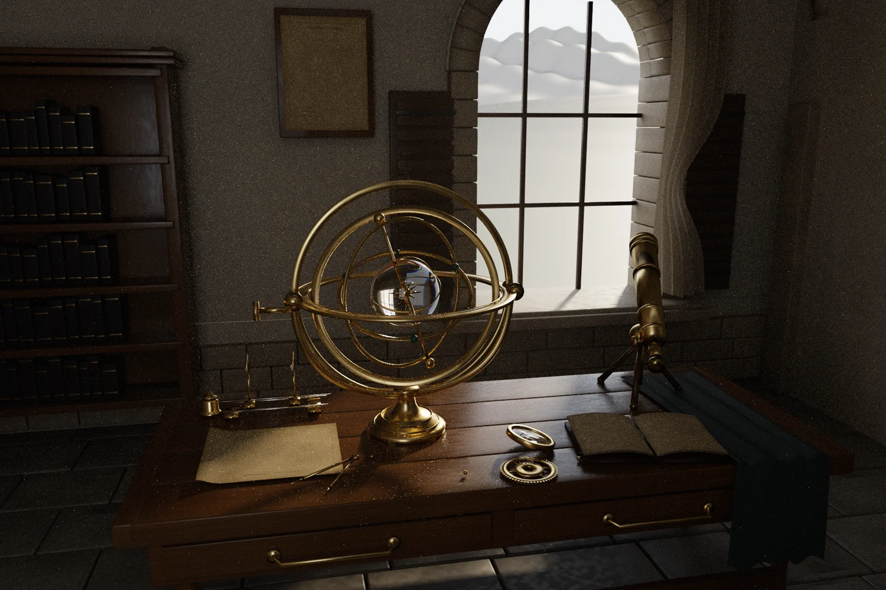

Rooms for light
Quiet Observatory IV brings together a brass armillary, dispersive quartz globe, telescope and two-lens optical bench beneath a vaulted ceiling. Books, cloth and surface materials give the optical instruments a setting and scale.
Independent work in
geometry, motion,
light & sound.
 View render ↗
View render ↗A collection of places built from geometry: vaulted rooms, mineral pools, basalt shores, flooded crystal and forest water.
View render ↗ View render ↗
View render ↗ View render ↗
View render ↗ View render ↗
View render ↗ View render ↗
View render ↗ View render ↗
View render ↗ View render ↗
View render ↗Quiet Observatory IV brings together a brass armillary, dispersive quartz globe, telescope and two-lens optical bench beneath a vaulted ceiling. Books, cloth and surface materials give the optical instruments a setting and scale.

View render ↗ View render ↗
View render ↗ View render ↗
View render ↗ View render ↗
View render ↗ View render ↗
View render ↗ View render ↗
View render ↗Sandstone Passage, Basalt Tide, Fernwater, Desert Hot Springs, Obsidian Reach and Drowned Geode explore distinct terrain and material problems. Procedural builders, mineral surface maps and native transport backends are retained with the scenes.
Normal, depth and light-component outputs reveal the structure beneath the beauty render. These are diagnostic views of geometry and transport, useful for inspecting what the renderer actually computed.
IMAGE / RECONSTRUCTION
Move the divider to inspect reconstruction against the retained unfiltered image. The viewer uses reduced-size previews; both native files are linked below.
 FINISHEDUNFILTERED
FINISHEDUNFILTEREDPROJECT RECORDS
Values below come from the retained project reports. The original runs have not been rerun for this portfolio; open each artifact to inspect its scope.
Artifact preview · Open complete JSON ↗
{
"geometry": {
"passed": true,
"triangles_authored": 1511194,
"degenerate_triangles_skipped_by_renderer": 480,
"mesh_sha256": "1cad20e08992074214b9006066139ac4217aa10f4773cf591f0315d5f64d8726",
"finite_geometry": true,
"nonunit_corner_normals": 0,
"closed_quartz_components": "5 entries \u2014 open full report",
"texture_checks": "11 entries \u2014 open full report",
"continuous_machining_axis_groups": 378
},
"numeric_transport": {
"passed": true,
"white_furnace_maximum": 0.828570664,
"portal_pdf_integral": 0.998319126,
"fresnel_normal": 0.0400000028,
"quartz_ior_400": 1.55773079,
"quartz_ior_700": 1.54061353
},
"passed": true,
"scope": "Explicit geometry/material/numerical/raw-output tests; not a photorealism or convergence certification"
}Artifact preview · Open complete JSON ↗
{
"passed": true,
"white_furnace_maximum": 0.828570664,
"portal_pdf_integral": 0.998319126,
"fresnel_normal": 0.0400000028,
"quartz_ior_400": 1.55773079,
"quartz_ior_700": 1.54061353
}Artifact preview · Open complete JSON ↗
{
"geometry": {
"passed": true,
"triangles_authored": 1511194,
"near_zero_area_triangles_reference_float32": 480,
"mesh_sha256": "1cad20e08992074214b9006066139ac4217aa10f4773cf591f0315d5f64d8726",
"finite_geometry": true,
"nonunit_corner_normals": 0,
"closed_quartz_components": "5 entries \u2014 open full report",
"texture_checks": "11 entries \u2014 open full report",
"continuous_machining_axis_groups": 378
},
"numeric_transport": {
"passed": true,
"white_furnace_maximum": 0.828570664,
"portal_pdf_integral": 0.998319126,
"fresnel_normal": 0.0400000028,
"quartz_ior_400": 1.55773079,
"quartz_ior_700": 1.54061353
},
"render": {
"passed": true,
"image_dimensions": [
1800,
1200
],
"png_sha256": "f5a74ce6dcbe905d587c302f36d4339332f93ea4c5976bdb39f4e3b5be18b25d",
"raw_sha256": "018c060d8a42197b681e2c48b01db938ef1ef955df21ba33f038ef27ce398daa",
"finite_raw": true,
"aov_sum_max_abs_error": 0.0006849810015410185,
"aov_sum_relative_error": 1.928482836766306e-06,
"raw_exr_roundtrip_max_error": 0.0,
"raw_not_clamped": true,
"dominant_transmitted_guide_pixels": 15276,
"native_resolution": true,
"sampling": {
"minimum_spp": 16,
"mean_spp": 89.0226074074074,
"maximum_spp": 768,
"camera_samples": 192288832,
"allocation": "fixed primary-material allocation, not noisy adaptive stopping",
"histogram": {
"16": 16804,
"72": 2002560,
"288": 125360,
"768": 15276
}
},
"seconds": 973.268188,
"triangles_actually_traced": 1510737
},
"passed": true,
"scope": "Explicit geometry/material/numerical/raw-output tests; not a photorealism or convergence certification"
}Artifact preview · Open complete MD ↗
# Fresh recovery verification Generated on 2026-09-22 UTC by [run 35670895190](https://github.com/cybrdelic/cybr-scenes/actions/runs/35670895190), not copied from historical renders. Each directory includes its output PNG, native execution receipt and verification JSON. All six passed: finite transport radiance, correct dimensions, nonblank images, positive triangle counts and zero reported nonfinite path samples. All were visually inspected. These 480-pixel, 24-sample/48-water-sample images prove complete execution of full geometry. Sampling noise remains, especially in foliage; they do not establish production image quality or physical-reference accuracy. Raw films and geometry are rebuilt by the workflow and are not duplicated in this small proof package. | Scene | Native triangles | Fresh image and evidence | | --- | ---: | --- | | Sandstone Passage | 8,108,728 | [Image](sandstone-passage/hero.png) · [Verification](sandstone-passage/verification.json) | | Basalt Tide | 11,644,696 | [Image](basalt-tide/hero.png) · [Verification](basalt-tide/verification.json) | | Fernwater | 20,400,077 | [Image](fernwater/hero.png) · [Verification](fernwater/verification.json) | | Desert Hot Springs | 23,690,858 | [Image](desert-hot-springs/hero.png) · [Verification](desert-hot-springs/verification.json) | | Obsidian Reach | 6,210,833 | [Image](obsidian-reach/hero.png) · [Verification](obsidian-reach/verification.json) | | Drowned Geode | 3,655,632 | [Image](drowned-geode/hero.png) · [Verification](drowned-geode/verification.json) |  ## New creation: Amber Passage [Successful creation run](https://github.com/cybrdelic/cybr-scenes/actions/runs/35671674210) · [Camera changes and verification](amber-passage/creation.json) · [Native receipt](amber-passage/receipt.json) This is a new camera/finishing composition using the recovered geometry, not a new geometry generator. Rendered at 640 × 400 and 32 samples per pixel. The default sandstone preset was not modified.  Tests: 36 Python tests passed; geo, hot, geode and obsidian C++ engines compiled; the first three also passed their implemented native self-tests. The existing Observatory IV was preserved without source changes; its separate pre-existing workflow remains available.